Alimentación
El acto de comer e ingerir alimentos supone aportar al organismo las sustancias que necesitamos para vivir. Por ejemplo, una manzana nos aporta agua, vitaminas, minerales, hidratos de carbono, etc., que nuestro cuerpo utiliza para reponer lo gastado en el desarrollo de las funciones vitales. El conjunto de alimentos que ingerimos debe cubrir las necesidades de nuestro organismo y aportar componentes promotores de salud que aumenten la esperanza y calidad de vida.
La alimentación es el conjunto de acciones mediante las cuales se proporcionan alimentos al organismo. Abarca la selección de alimentos, su cocinado y su ingestión. Depende de las necesidades individuales, disponibilidad de alimentos, cultura, religión, situación socioeconómica, aspectos psicológicos, publicidad, moda, etc. Los alimentos aportan sustancias que denominamos nutrientes, que necesitamos para el mantenimiento de la salud y la prevención de enfermedades.
Nutición General
Según la OMS, la nutrición es la ingesta de alimentos en relación con las necesidades dietéticas del organismo. Una buena nutrición, entendida como una dieta suficiente y equilibrada combinada con el ejercicio físico regular, es un elemento fundamental para mantener una vida saludable.
La nutrición es el proceso en el que nuestro organismo utiliza el alimento para mantenerse en buen funcionamiento y reparar zonas deterioradas. Para ello se llevan a cabo diversos procesos entre los que se incluye la absorción, asimilación y transformación de los alimentos, que permiten al organismo incorporar los nutrientes destinados a su mantenimiento, crecimiento y correcto funcionamiento.
Con frecuencia se utiliza el término alimentación como sinónimo de nutrición, pero tienen diferencias que se deben tener en cuenta, la más destacable sería que la nutrición es un acto involuntario y la alimentación depende de actos voluntario y conscientes a la hora de ingerir los alimentos.
Por este motivo nosotros podemos actuar sobre nuestra alimentación, incluyendo alimentos saludables en las proporciones adecuadas, para disfrutar de la correcta nutrición de nuestro cuerpo.
La nutrición es uno de los pilares de la salud. En todas las edades una nutrición adecuada permite reforzar el sistema inmunitario, contraer menos enfermedades y en general, disfrutar de una buena salud.
La pirámide alimenticia, pirámide alimentaria, o también llamada pirámide nutricional, es una referencia gráfica de la cantidad de los diferentes grupos de alimentos que debemos consumir diariamente para mantenernos saludables.
En nutrición, la pirámide alimenticia es una referencia a la proporción que nuestro cuerpo necesita para mantener una dieta sana y balanceada. Se recomienda la ingesta diaria de 55% de carbohidratos, 30% de grasas y 15% de proteínas, vitaminas, minerales y fibras.
La pirámide alimenticia es solo una referencia gráfica, ya que las cantidades ideales de consumo dependerán de la edad, el peso, la altura, la contextura y actividad física ejercida por cada individuo. No obstante ello, existen proporciones indicadas para los 5 o 6 grupos alimenticios que se dividen en los siguientes:
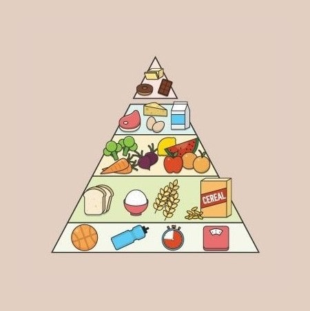
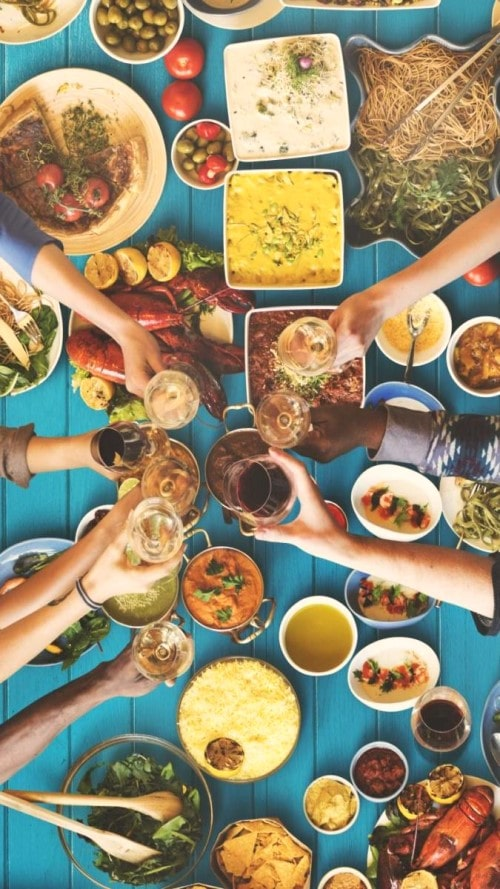
- Granos: son la base de la pirámide y aporta los carbohidratos necesarios para la energía diaria para el correcto funcionamiento del cuerpo. El arroz, las masas, el pan, el maíz y las tortillas. Se recomienda entre 6 a 11 porciones diarias.
- Frutas y vegetales: se encuentran en el segundo nivel de la pirámide y proporciona al organismo la fibra, las vitaminas y los minerales necesarios. Se recomienda consumir 2 a 3 porciones de frutas y 3 a 5 porciones de vegetales por día.
- Lácteos y derivados: son fuente de vitaminas, fósforo y calcio necesarios para la regeneración y fortalecimiento de los huesos y músculos. Se recomienda consumir entre 2 a 3 porciones diarias.
- Carnes, pescados, huevos y legumbres: contienen aminoácidos esenciales para crear nuestras propias proteínas y fortalecer nuestro sistema inmunológico. Se recomienda ingerir 2 porciones diarias.
- Las grasas, aceites y azúcares: forman el último nivel de la pirámide y se recomienda ingerir 1 porción diaria.
Nutrición deportiva
Cuando uno habla de “alimentación y deporte”, lo primero que se le ocurre es pensar en comer lo mejor posible para así desarrollar una actividad extra sin sufrir agotamiento físico. Sin embargo, no es tan sencillo: aunque comamos un día bien, seguiremos sin ser capaces de correr los 100 metros lisos sin caer en estado de fatiga. Es más, la alimentación y el deporte deben recorrer juntos un largo camino para llegar al podio o simplemente para sentirse bien. Asimismo, hay que tener en cuenta que, además de recorrer unos caminos juntos, la alimentación y el deporte deben estar relacionados. Es decir, no todos los deportes llevan asociado el mismo tipo de alimentación. Se deben hacer diferencias según una serie de características como tipo de acto deportivo, aeróbico o no, características del deportista, etc.
Algunos de los objetivos que persiguen los deportistas cuando entrenan son:
- Alcanzar mayor rendimiento.
- Mejorar sus marcas.
- Ganar masa muscular.
- Reponerse tras el esfuerzo.
- Tener más energía.
- Perder peso (grasa).
Lograr todos estos objetivos puede hacerse complejo, pero será más viable si te lo propones, si planificas bien las tareas puede llegar a ser muy sencillo. Para ello acude y pide ayuda a un profesional cualificado que te oriente sobre cómo equilibrar y adaptar los menús semanales a tus requerimientos personales.
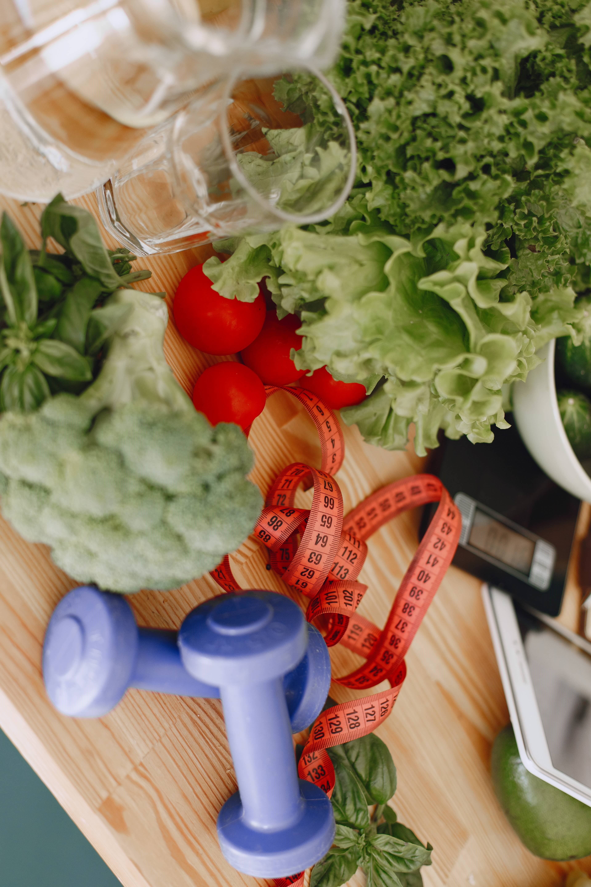
La alimentación del deportista no sólo debe nutrir las células del organismo para que éste se desarrolle y mantenga, sino que, además, debe cubrir el gasto derivado del esfuerzo extra. También, como en otros aspectos de la vida, la alimentación del deportista se ve rodeada de ciertos matices que, si bien benefician en algunos casos, son muy perjudiciales en otros. En esta sección especial, desarrollaremos estos y algunos otros temas de interés que relacionan la alimentación y el deporte, no sólo para deportistas profesionales, sino también para aficionados.
Comer de forma correcta se hace imprescindible en cualquier etapa de la vida. La misma importancia o más se debe dar al entreno, pero de poco te servirá entrenar duro y a diario si no te alimentas bien. La alimentación juega entonces un papel fundamental en tu día a día para alcanzar tus objetivos.
A continuación te dejo unos tips que te serán útiles para empezar a planificar tu alimentación deportiva:
- Basa tu plan nutricional en alimentos saludables. Aléjate de dietas milagro, innecesarios suplementos, falsos quema-grasa, pastillas que mejoran el rendimiento, etc.
- Hidrátate. Entre el 50-60% de tu cuerpo es agua. Cualquier reacción química que se origina en tu organismo se dan en medio acuoso: los músculos no son una excepción. Una ligera deshidratación (entre el 2-3%) implica una bajada de rendimiento. Es más, un músculo deshidratado es más factible de sufrir lesiones.
- Centra tu dieta en alimentos naturales. Son mucho más baratos, más nutritivos y te ayudarán a cubrir tus necesidades diarias de nutrientes. De paso ahorras ingerir grandes cantidades de sal, conservantes y colorantes artificiales, grasas trans y un sinfín de productos que no sabemos el impacto que tendrán en nuestro organismo a largo plazo. Puedes incluir alimentos con propiedades digestivas y disfrutar de los beneficios del jengibre.
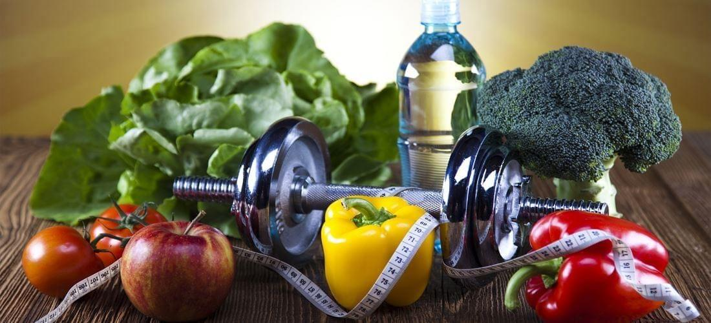

- Da prioridad al consumo de verduras y frutas. No existe dieta saludable ni óptima para obtener un buen rendimiento si la base dietética no se rige siendo rica en frutas y verduras. Tanto las verduras como las frutas nos otorgan un computo de minerales, vitaminas, fibra, antioxidantes y fitonutrientes que probablemente no encuentres en otro grupo de alimentos. Actúan como una “polifarmacia” con efectos positivos y sinérgicos.
- Planifica tus comidas. Una de las mejores formas de asegurar que vas a comer lo que idealmente te conviene en cada toma. Planifica, compra y prepara lo que necesitas con antelación para cada ocasión.
- ATENCIÓN al “Nutrient Timing”. ¿Y qué es? Saber elegir qué comer antes, durante y después del ejercicio. Se generan muchos cambios metabólicos en tu músculo durante la actividad física y a posteriori. Nos interesa rendir al máximo, optimizar las adaptaciones al entrenamiento y acelerar la recuperación entre entrenamientos. Por ello es importante proporcionarle al músculo todos y cada uno de los nutrientes que necesita para expresar su máximo potencial. Esto es clave y de gran importancia en nutrición deportiva.
Nutrición Celíaca
La enfermedad celíaca es una enfermedad digestiva que produce daños en el intestino delgado. La enfermedad es provocada por el consumo de alimentos que contienen gluten: una proteína que se encuentra de forma natural en el trigo, la cebada y el centeno; y es común en alimentos tales como pan, pasta, galletas y pasteles. Muchos alimentos empaquetados, bálsamos para labios y labiales, productos para el cabello y la piel, dentífricos, suplementos alimenticios y vitaminas y, menos comúnmente, algunos medicamentos, contienen gluten.
La enfermedad celíaca puede ser muy grave; puede causar problemas digestivos de larga duración y evitar que el cuerpo obtenga todos los nutrientes que necesita. También puede afectar otras partes del cuerpo además del intestino.
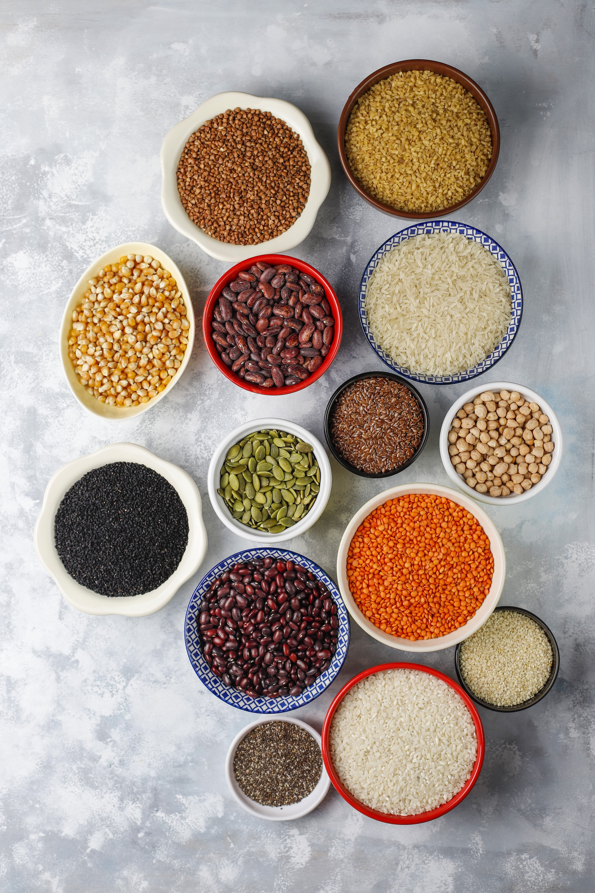
La enfermedad celíaca es diferente a la sensibilidad al gluten o intolerancia al trigo. Si usted tiene sensibilidad al gluten puede presentar síntomas similares a los de la enfermedad celíaca, tales como dolor abdominal y fatiga. A diferencia de la enfermedad celíaca, la sensibilidad al gluten no causa daños en el intestino delgado.
También debe diferenciarse esta enfermedad de la alergia al trigo. En ambos casos, el sistema inmunológico del cuerpo reacciona al trigo, sin embargo, algunos de los síntomas de la alergia al trigo, como picazón en los ojos o dificultad para respirar, son diferentes de los de la enfermedad celíaca. Las alergias al trigo tampoco causan daños a largo plazo en el intestino delgado.
¿Cuales son los alimentos que se pueden consumir si se tiene celiaquismo?
Los alimentos como carne, pescado, frutas, verduras, arroz y patatas, sin aditivos ni condimentos, no contienen gluten y son parte de una dieta bien balanceada. Se puede comer pan, pasta y otros alimentos libres de gluten que ahora son más fáciles de encontrar en las tiendas, restaurantes y compañías de alimentos especiales. También puede comer papa, arroz, soya, amaranto, quinua, trigo sarraceno o harina de frijol en lugar de harina de trigo.
En el pasado, los médicos y nutricionistas desaconsejaban comer avena en los casos de pacientes celíacos; sin embargo, hay indicios de que la mayoría de estos pacientes pueden comer cantidades moderadas de avena, siempre y cuando no entren en contacto con el gluten proveniente del trigo durante el procesamiento. Consulte a su médico sobre si puede incluir la avena en su dieta.
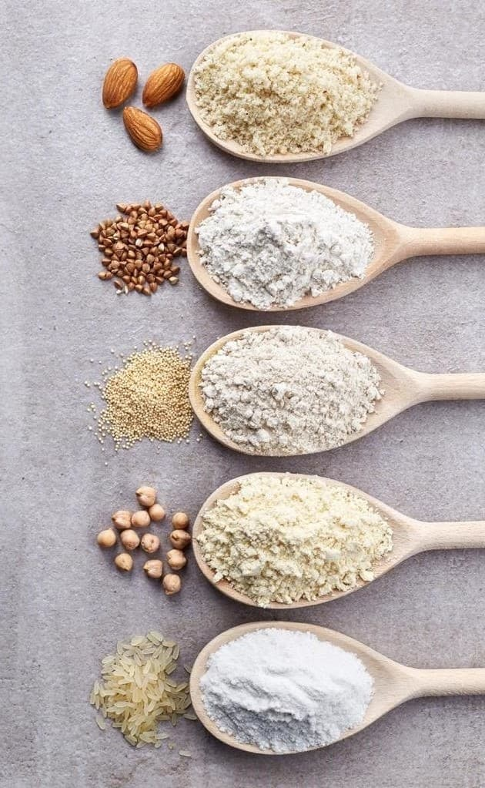
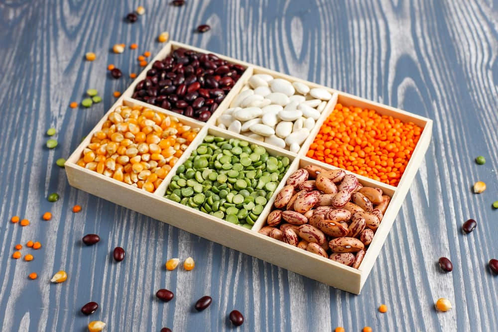
Al hacer compras y comer fuera recuerde:
- leer las etiquetas de los alimentos—especialmente alimentos en conserva, congelados y alimentos procesados—para descartar que contengan gluten
- identificar los alimentos etiquetados como “libres de gluten”. Por ley, estos alimentos deben contener menos de 20 partes por un millón, muy por debajo de los límites previstos para ocasionar problemas en la mayoría de los pacientes celíacos
- preguntar a los meseros y chefs de restaurantes si hay disponible un menú libre de gluten, cómo preparan los alimentos y qué contienen
- preguntar al anfitrión de una cena o fiesta acerca de las opciones libres de gluten antes de asistir a una reunión social
Nutrición Vegetariana
Las personas que siguen dietas vegetarianas pueden obtener todos los nutrientes que necesitan. Sin embargo, deben tener cuidado de comer una amplia variedad de alimentos para cubrir sus necesidades nutricionales. Los nutrientes vegetarianos deben enfocarse en incluir proteínas, hierro, calcio, zinc y vitamina B12.
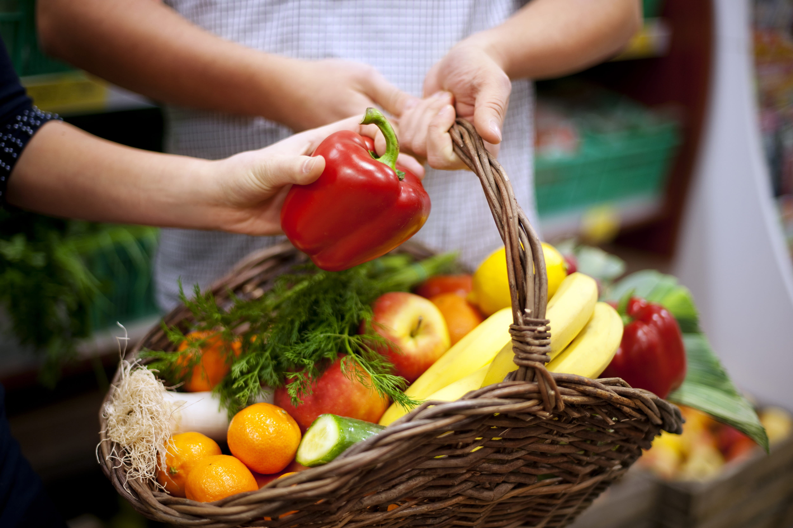
Una dieta vegetariana se enfoca a la alimentación con verduras. Esto incluye frutas, verduras, guisantes y alubias secas, granos, semillas y nueces. No existe un único tipo de dieta vegetariana. Los modelos de alimentación vegetariana suelen entrar en uno de los siguientes grupos:
- La dieta vegetariana estricta, que excluye todas las carnes y productos animales
- La dieta lacto vegetariana, que incluye alimentos derivados de las plantas y productos lácteos
- La dieta lacto-ovo vegetariana, que incluye productos lácteos y huevos
A continuación te compartimos una receta exquisita para disfrutar sin culpas!
WOK DE FIDEOS CON TOFU - INGREDIENTES:
- 250 g tofu
- 1 pimiento rojo
- 1 cebolla
- 1 zanahoria
- 1 pimiento verde
- 1 calabacín
¡RINDE DOS PORCIONES!
- 1 brócoli pequeño
- 1 paquete de fideos al huevo
- Salsa de soja
- Aceite de oliva
- Sal a gusto
- Pimienta a gusto
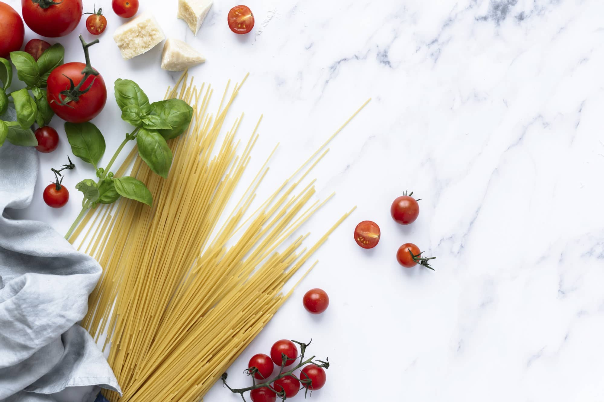
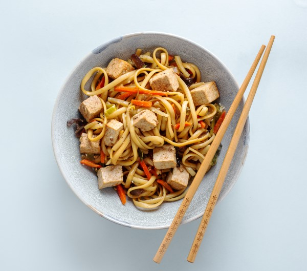
PASOS:
- En una sarten sofreimos todas las verduras hasta que queden doraditas, añadiendo sal al gusto(pero no demasiada ya que la salsa de soja es salada) y un poco de pimienta
- Mientras hacemos las verduras cocemos los fideos tal como indique en el envase.
- Cuando las verduras estén doraditas añadimos el tofu cortado en daditos pequeños(no demasiado). Si usamos pollo habria que añadirlo antes ya que tarda mas en hacerse.
- Una vez tengamos los dados de tofu(o pollo) añadimos un poco de salsa de soja y dejamos rehogar hasta que este consumido.
- A continuación añadimos los fideos a la sarten con mas salsa de soja hasta que queden cubiertos todos.
- Ahora solo queda emplatar y disfrutar.
Nutrición Vegana
Una dieta sin productos de origen animal es extremadamente versátil. La transición hacia una alimentación más vegetal abre un mundo de nuevas y emocionantes posibilidades culinarias. Los productos de origen animal se pueden sustituir fácilmente.
Independientemente del estilo de alimentación, ya sea vegetariano, vegano o no, una buena planificación es esencial para evitar las deficiencias nutricionales. Una alimentación vegana óptima se garantiza al llevar una dieta equilibrada y variada sin perder de vista los nutrientes fundamentales. Asimismo, los nutricionistas recomiendan hacerse un análisis de sangre cada uno o dos años.
- Las frutas y verduras como los tomates, la col, la calabaza, el ajo, las olivas, el brócoli, las manzanas, las nectarinas, los frutos del bosque, los plátanos, los melones y las naranjas son alimentos que constituyen una fuente importante de vitaminas, minerales, fitonutrientes y fibra.
- Las legumbres como las lentejas, los guisantes, las alubias, la soja y los altramuces son una fuente importante de proteína.
- Los frutos secos y semillas como las semillas de lino, las nueces y las semillas de cáñamo aportan grasas saludables y nutrientes con alto valor nutricional.
- Las alternativas veganas a la carne como el tofu, las hamburguesas veganas, el escalope y las salchichas se pueden encontrar en multitud de versiones hechas, por ejemplo, con soja, seitán y altramuz. También existen alternativas veganas para la leche, el yogur y el queso. Estas se elaboran normalmente con soja, frutos secos y cereales.
- Los granos integrales y cereales como la avena, el centeno, la espelta, el trigo, la cebada, el mijo y el arroz, junto con pseudocereales como la quinua, el amaranto y el trigo sarraceno, aportan carbohidratos complejos, fibra y fitoquímicos.
¿Que evitar?
- Carnes rojas y de ave procedentes de animales como la vaca, el cerdo, el caballo, el pollo y el pavo.
- Pescados y otros animales marinos como todas las especies de peces, calamares, mejillones, cangrejos y langostas.
- Lácteos como la leche, el queso, el yogur y la mantequilla y Huevos como los huevos de gallina y el caviar.
- Ingredientes de origen animal como la miel, gelatina, la lactosa, el suero de leche, la goma laca, el carmín y los ácidos grasos omega 3 derivados del pescado.
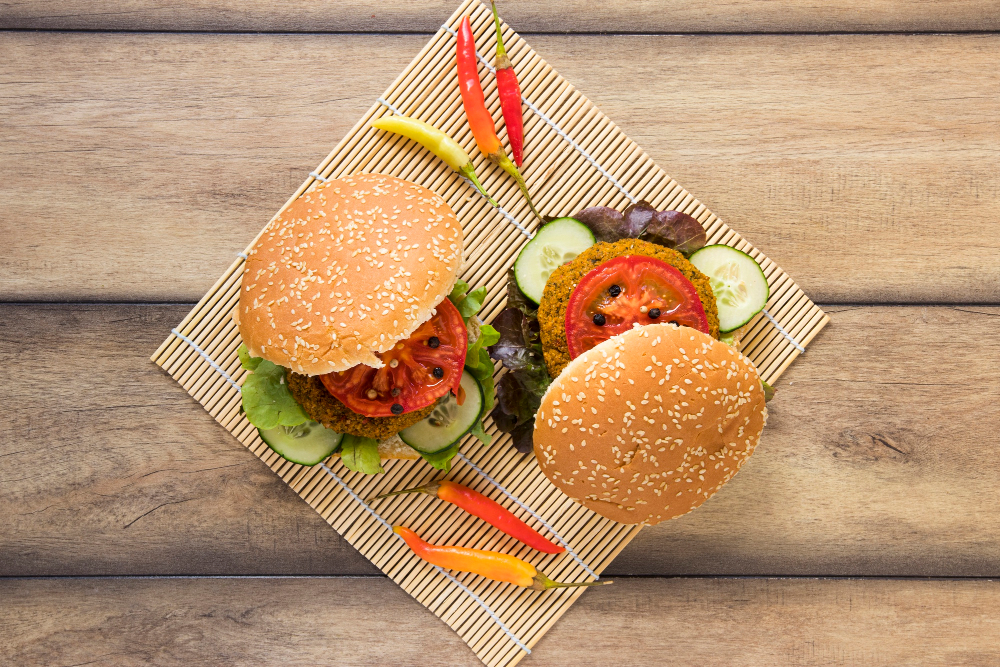
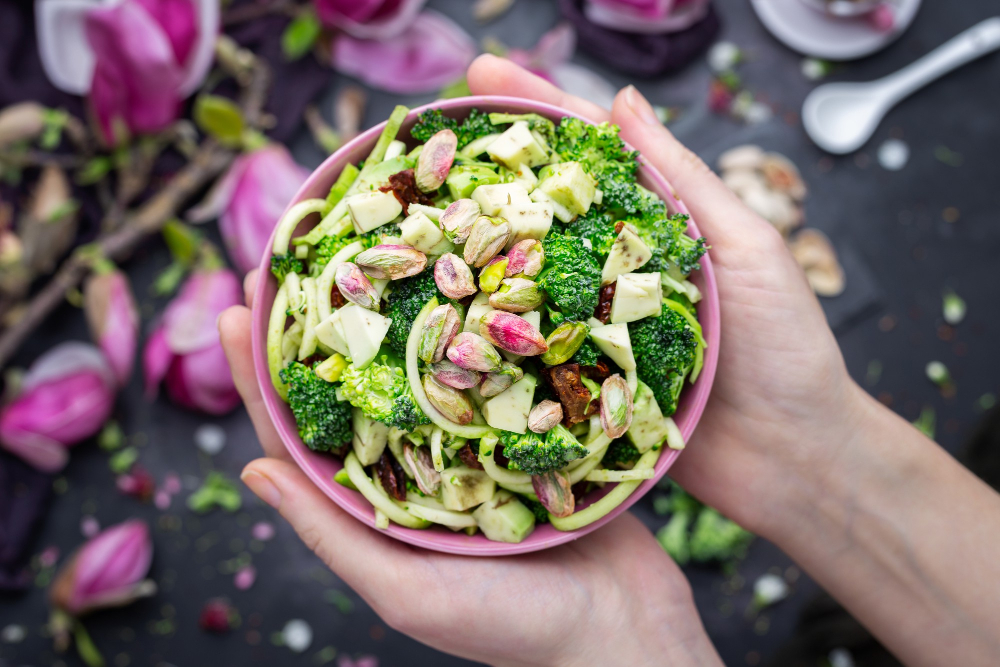
Aquellos que llevan una alimentación vegana deben garantizar el aporte suficiente de vitamina B12 a través de suplementos alimenticios y/o usando pasta de dientes con vitamina B12.
Para suplir las necesidades de calcio, se deben consumir de manera consciente vegetales ricos en calcio (como las verduras de hoja verde oscuro, las verduras de hoja, la soja, el tempeh, el tahini, la avena, las frutas cítricas, los frutos secos, las semillas y las pasas), aguas minerales con calcio y productos enriquecidos como la leche vegetal.
El cuerpo puede recibir la cantidad suficiente de yodo mediante el consumo de algas o suplementos a base de algas como la espirulina o incorporando sal yodada en nuestra dieta. No obstante, una cantidad excesiva de yodo puede causar problemas de salud.
Nutrición Infantil
Una alimentación sana y equilibrada es vital para que los niños crezcan sanos y fuertes. Comer bien no solo afecta a su crecimiento físico sino también a su desarrollo intelectual.
En la infancia se consolidan los hábitos alimentarios saludables que durarán toda la vida, por eso es muy importante que los niños lleven una dieta completa y equilibrada desde pequeñitos. ¿La mejor guía para padres? La pirámide nutricional. Aprende como ponerla en práctica en el menú diario de tus hijos.
Desayuno
- Lácteos: Un yogur, un poco de queso o un vaso de leche.
- Cereales: Una tostada de pan con aceite de oliva(la mejor grasa que pueden tomar).
- Fruta.
A media mañana
Fruta: una pieza para tomar en el recreo. No debe sustituirse por los zumos envasados, que son bebidas azucaradasa base de fruta, que aportan más calorías. Si para desayunar se ha tomado un zumo (natural) o fruta, a esta hora se puede también tomar un lácteo.
Almuerzo
- Cereales: pasta, arroz, patatas o legumbres son ideales para preparar el primer plato.
- Proteínas: de segundo, carne o pescado, fomentando el consumo del segundo. Nunca deben faltar a la hora de la comida.
- Verduras: para acompañar o formar parte del primero y el segundo plato. En verano, el gazpacho es lo más completo.
- Agua: debe ser la bebida habitual del niño. Más sana que cualquier refresco o bebida carbonatada. Los refrescos se reservarán para ocasiones especiales.
- Sal: usar preferentemente la yodada y no abusar de ella.
- Grasa: el aceite, siempre de oliva.
- Fruta: para el postre una pieza o un zumo natural. Los postres dulces son solo para ocasiones especiales.
Merienda
- Lácteos: si por la mañana se ha tomado yogur, ahora un vaso de leche o queso, para que el niño coma variado.
- Cereales: unas galletas, frutos secos o un bocadillo.
- Fruta.
Cena
- Verduras: en ensalada, menestra, puré, crema… cualquier forma es válida.
- Proteínas: huevo (uno al día) , carne, pescado… Es bueno, cambiar respecto a la proteína que se ha comido al medio día.
- Fruta: de postre o en un zumo natural para acompañar la comida.
Recetas
Un plan de alimentación saludable incluye una gran variedad de alimentos. Agregá siempre que puedas una paleta de colores variada a tu plato. Las verduras de hoja verde oscura, las naranjas y los tomates—incluso las hierbas frescas—están llenos de vitaminas, fibra y minerales. Agregar pimientos, brócoli o cebollas congelados a guisos y tortillas aumenta el color y los nutrientes. Todas las semanas queremos acercarte las mejores ideas y recetas para deleitarte, y a la vez, cuidar tu organismo.
TOMATES RELLENOS, una comida fácil y rica - Rinde 6 raciones
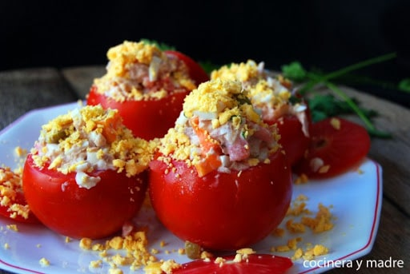
- 6 Tomates grandes
- 170 g Atún en lata
- 2 Cebollas de verdeo
- 2 Huevos duros
- 10 cdas. Arroz cocido
- 3 cdas. de Mayonesa
PASOS:
- Limpiar bien los tomates y secarlos. Con ayuda de un cuchillo retirarles una pequeña parte superior y con mucho cuidado, sacarles las semillas y el líquido.
- Desmenuzar el atún, y mezclarlo con la cebolla de verdeo bien picada (la parte verde guardarla para después), con el huevo duro rallado, con el arroz blanco cocido, con la mayonesa, y salpimentar.
- Rellenar los tomates con ayuda de una cuchara y decorarlos con la parte verde de las cebollas de verdeo.
PERAS AL HORNO, un postre con pocas calorías - Rinde 4 raciones
- 4 peras
- 2 cdas edulcorante
- 1/2 vaso agua
- 2 cdas vino oporto
PASOS:
- Lavar muy bien las peras, cortarlas por la mitad, quitarles el centro y acomodarlas en la fuente con el agua, el oporto y el edulcorante y llevarlas al horno precalentado, moderado-bajo.
- Al cabo de unos 10 minutos, las damos vuelta y las dejamos en el horno otros 5 ó 6 minutos. (o hasta que se consuma toda el agua y caramelicen).
- Las sacamos del horno y esperamos que enfríen a temperatura ambiente. Se pueden servir solas o con un copete de crema batida light.
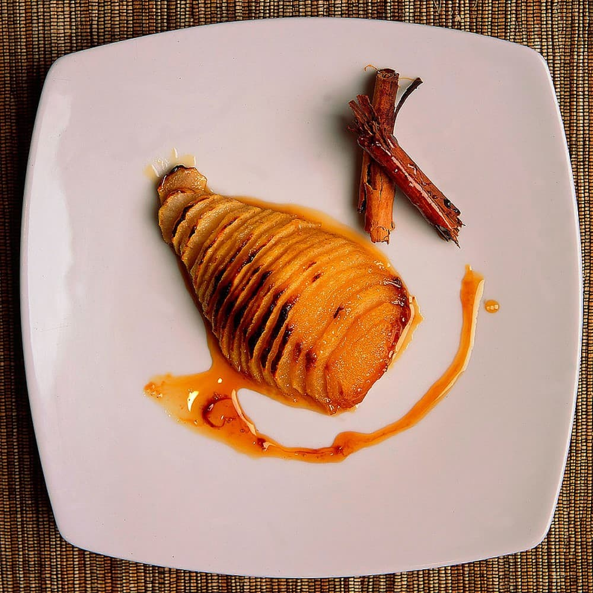
¡HOT CAKES! PARA ACOMPAÑAR CON DULCE DE LECHE O CON LO QUE QUIERAS - Rinde 3 raciones
- 1 1/2 taza harina
- 1 huevo pequeño
- 3 cdas. azúcar
- 1 cda. esencia vainilla
- 3/4 taza leche
- 5 gr manteca
PASOS:
- Colocar en un boul el huevo y el azúcar, batir hasta que haga un poco de burbujas y agregar la esencia de vainilla; incorporar de a poco la harina leudante e intercalar con la leche en caso de que la mezcla se torne demasiado espesa, cuidando de que no quede muy líquida y batir para evitar que se formen grumos.
- Poner una sartén a fuego medio, enmantecarla y remover el exceso de manteca con un papel de cocina; cuando la sartén este muy caliente poner un poco de la mezcla con un cucharón grande en forma circular, poner el fuego a mínimo y tapar un minuto hasta que se formen agujeritos en casi todo el disco; dar vuelta con una espátula y retirar cuando la parte de abajo se tueste bien. Listos para comer!
Tabla de índice de masa corporal
El IMC es la relación existente entre el peso y la talla y sirve para identificar el sobrepeso y la obesidad en adultos, siempre y cuando se realice de forma adecuada. Se calcula dividiendo el peso en kilograos por el cuadrado de la talla en metros: peso (kg)/talla (m2).
Un sencillo ejemplo: una persona con 90 kilogramos de peso y una altura de 1,70, tendrá un índice de masa corporal de 31,4, lo que lo colocaría dentro de obesidad tipo I. Para una persona de 1,70 de altura la clasificación quedaría así:
| IMC |
Clasificación |
Rangos |
| Menor 18,5 |
Bajo peso-Peso insuficiente |
Menos de 53,44 kg. |
| 18,5-24,9 |
Normopeso |
Entre 53,46 y 72,22 kg. |
| 25-26,9 |
Sobrepeso grado I |
Entre 72,25 y 78 kg. |
| 27-29,9 |
Sobrepeso grado II |
Entre 78,03 y 86,67 kg. |
| 30-34,9 |
Obesidad de tipo I |
Entre 86,7 y 101,12 kg. |
| 135-39,9 |
Obesidad de tipo II |
Entre 101,15 y 115,57 kg. |
| 40-49,9 |
Obesidad de tipo III (mórbida) |
Entre 115,6 y 144,47 kg. |
| Mayor 50 |
Obesidad de tipo IV (extrema) |
Más de 144,5 kg. |
Copyright © 2021 Julia Pedraza - Todos los derechos reservados